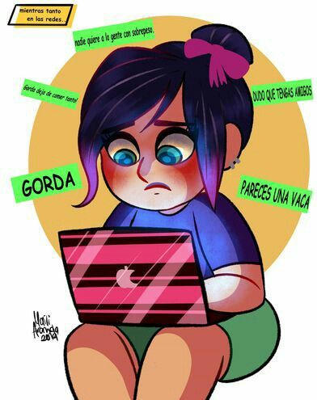

DISCRIMINACION DE GÉNERO
La violencia escolar es uno de los tipos de violencia que reflejan la descomposición de la sociedad actual. No es posible hablar de violencia escolar de forma aislada, sin establecer nexos entre lo público y privado, entre comportamientos colectivos eindividuales, aspectos familiares y comunitarios; sin aludir a las diferencias de género e historias de vida de quienes agreden o son víctimas, y sin considerar la cultura patriarcal y las relaciones interpersonales. Al interrelacionarse todos esos factores hacen del tema de la violencia un problema complejo que requiere conocer diferentes factores para poder comprenderla y atenderla. Palabras clave: bullying, educación, cultura, familia, delincuencia.
En el nivel medio superior se han identificado algunos fenómenos en la población estudiantil que se traducen en problemática, como los citados por De la Fuente (2007), al afirmar que la educación media superior en México enfrenta cuatro graves problemas: cobertura insuficiente, deserción, falta de calidad e inequidad.
La violencia escolar es un reflejo de la descomposición de la sociedad, en el marco de un Estado de derecho débil, una estructura socioeconómica incapaz de satisfacer las necesidades básicas de la población y una ruptura del tejido social que desencadena la lucha por espacios alternos de sobrevivencia y reorganización sociopolítica.No es posible hablar de violencia escolar de forma aislada, sin establecer nexos entre lo público y lo privado, entre comportamientos colectivos e individuales, aspectos del ambiente familiar y comunitario
AGRECIONES VERBALES
1.A ntecedentes de la Investigación Este texto historico y cultural de violencia es posible ser comparado con los indices y esempños academicos de los paises latinoamericanos, quienes aun no logran posicionarse entre los mejoresvdel mundo. Acoso VERBAL... Se ejerce a traves de palabras, gritos, gestos agresivos, malos tratos, falta de atencion, silencio y chantajes, que buscan denigrar, intimidar amenazar o manipular a la persona violentada, lo hacen profundamente, destrozando la autoestima y la estabilidad emocional. La violencia verbal en adolescentes puede manifestarse a través de insultos, burlas, amenazas o humillaciones, y puede tener graves consecuencias en su salud mental y relaciones sociales. Algunos efectos incluyen:
- Baja autoestima
- Ansiedad y estrés
- Dificultades para establecer relaciones saludables
- Problemas de comportamiento y rendimiento académico
Es importante abordar este tema con seriedad y buscar apoyo si se está experimentando violencia verbal.